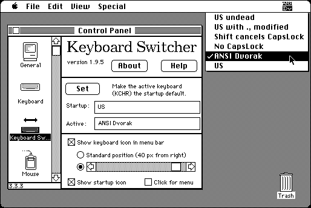

Download
KySw-1.9.5.zip (37K) Keyboard Switcher 1.9.5 repackaged into a zipped hfs disk image and checksum file. The disk image can be mounted with Mini vMac.
KySw-1.9.5.sit.bin (33K) Keyboard Switcher 1.9.5 in the original format.
copyright: James W. Walker
mod date: Dec 5, 1992
license: Freeware
from url :
James Walker’s Mac Stuff
Puts “the icon representing the active KCHR [keyboard layout] into the menu bar. Clicking on this icon makes the next available KCHR the active KCHR, without changing the startup KCHR.” For System 6. It works but isn't needed in System 7. Some example keyboard layouts are included. The “Keyboard Menu” init, which is included but not documented, will not work in System 6 (crashes on boot).

If you find these downloads useful, please consider helping the Gryphel Project, which hosts them.
Here are the md5 checksums for the downloads, signed with Gryphel Key 5:
--------- GRY SIGNED TEXT --------- dc5227861755d5d890bea51588427541 KySw-1.9.5.zip 11ba9c68707b9077a6851b1a645b501c KySw-1.9.5.sit.bin ------- BEGIN GRY SIGNATURE ------- Gry/4Xa8CFcUzxdN/LQl9I4lGIt96KhrFP70VElMemjfnV3hjj5rpM5Etv9Sj1aT dgC1Z7N2cnmDw0/9WypveHGsElSz2cWf6SN3Bt7pbxOs54WglpIyDOnxzxSQxanX Mh/pcjVBhemov+DVaI3Rgd0tK2cEHXRJBcrYoqgx5c6QwfiBxWQxKwSYVvrHHwGi -------- END GRY SIGNATURE --------